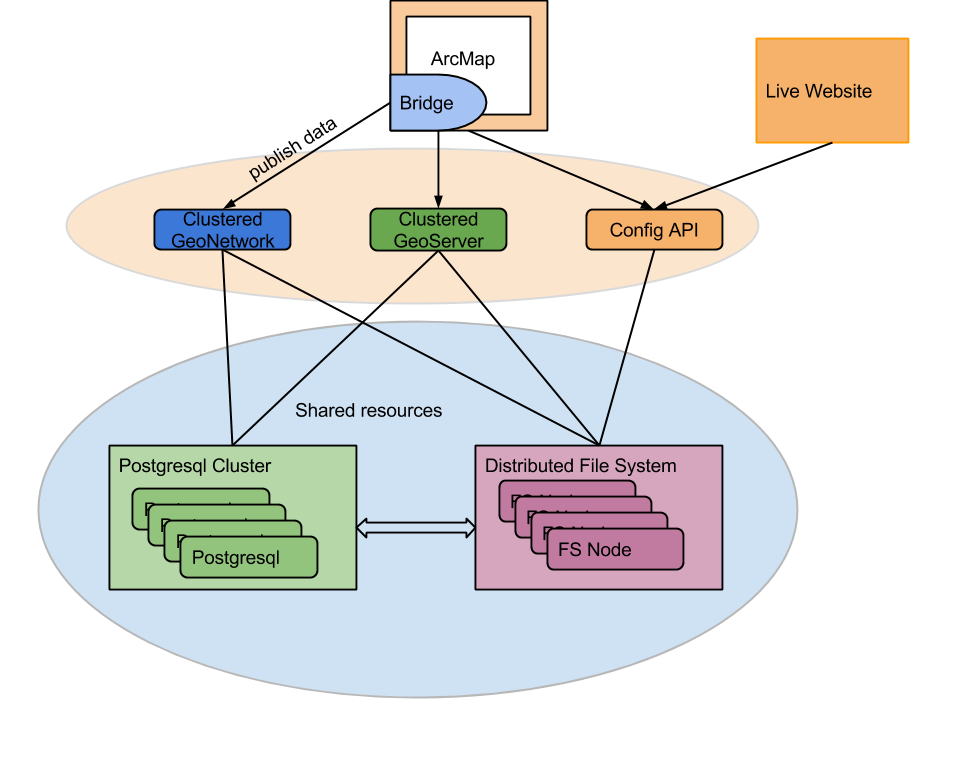

GeoCat Live
+
Bridge

Quienes somos


Ecosistema GIS
- Bases de datos
- Servidores de mapas
- Catálogo de metadatos
- Cliente de escritorio [¿ArcGIS?]

Ecosistema GIS
- Sistemas interoperables
- Creación y edición de Mapas
- Datos accesibles al usuario
- INSPIRE
GeoCat Bridge
Cliente de escritorio transparente para ArcGIS

GeoCat Bridge
- Publicación the WMS/WFS en geoServer o mapServer
- Publicación de CSW/RDF/RSS en geoNetwork
- Almacenamiento en PostGIS
- WMC para mapas online
GeoCat Bridge
Transparente para geoServer o mapServer
Misma simbología y fonts

GeoCat Bridge
GeoCat Bridge
- Usuarios: transparente (servicios OGC)
- Editores: transparente (GeoCat Bridge)
- Administradores: ArcGIS Server -> Software libre
GeoCat Live
SaaS GIS
Existen otras alternativas
- Libre*
- Fácil de instalar y administrar
- Completo
- GeoServer + MapServer
- GeoNetwork + pyCSW
- PostGIS
- UI unificada
- Ofrecido como Hosting
Arquitectura Conceptual

Componentes

Autenticación
- LDAP
- Single Sign-on
- Se puede compartir entre dominos
- o con otras aplicaciones

Autenticación
- LDAP lo tiene "todo"
- Grupos de geoNetwork
- Roles de geoServer
- ...
excepto...
-
Workspaces y Namespaces de geoServer
- Rest API
- Requiere una api adicional
- en el mismo servidor que geoServer
OpenStack

Monitorización
Zabbix
Comprobaciones personalizadas

Live web
Spring, JSP, tomcat, ...

Live web
Proyectos

Live Web
Estilo personalizable

Y eso es todo
¿Dudas, preguntas, sugerencias, críticas destructivas?
@geocat_bv